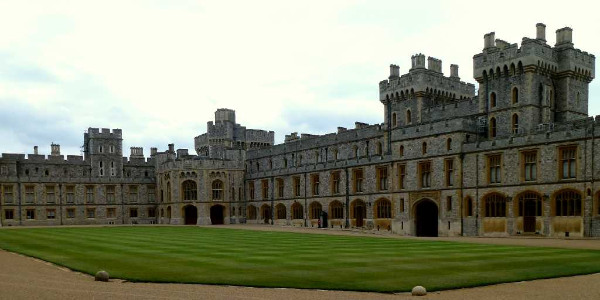
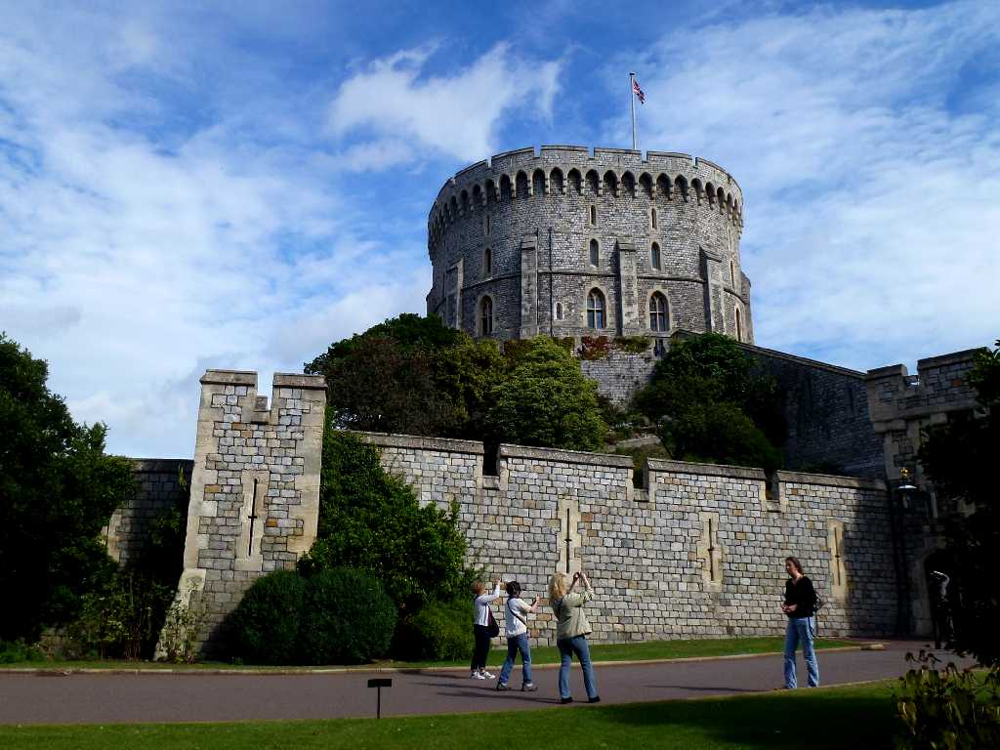
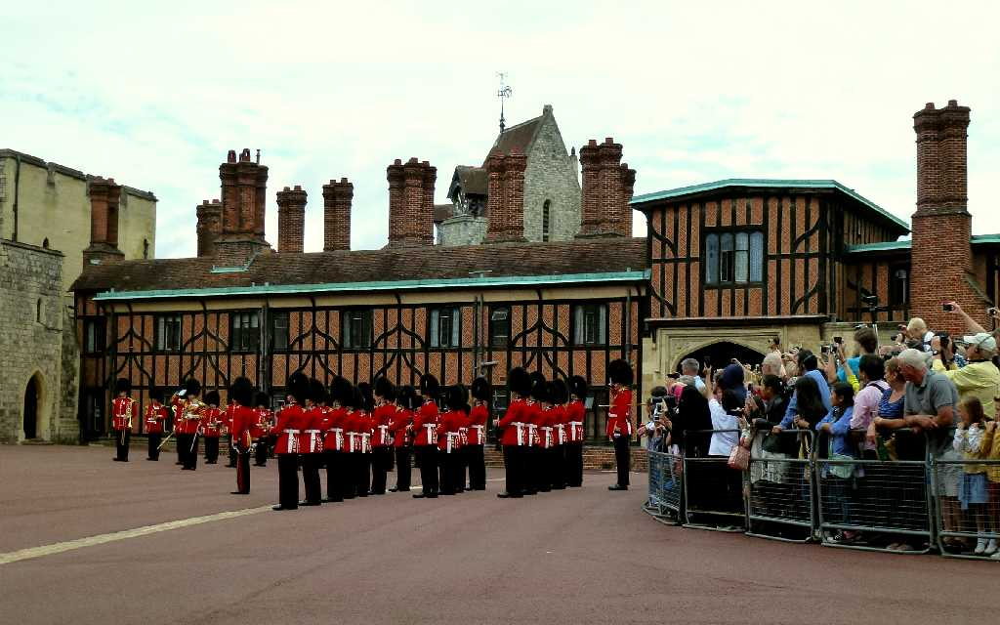
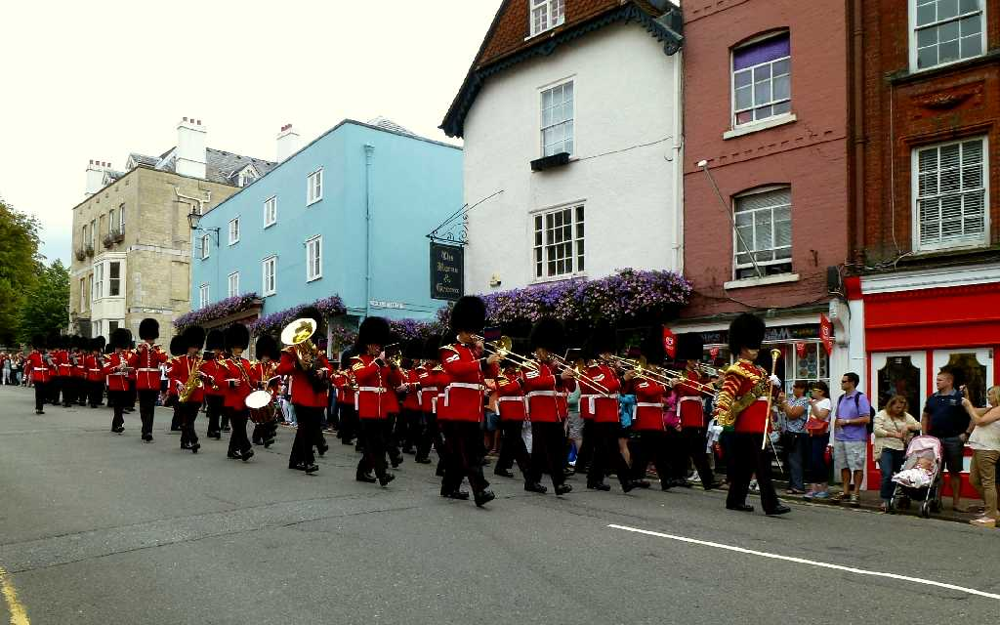
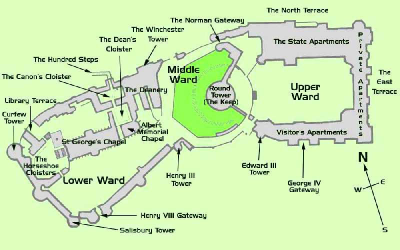

Windsor Castle
８０日間世界一周鉄道の旅で５５日目 １１世紀にウイリアム１世が築いた砦がウインザー城となり英国君主の公邸となっている

Round Tower Windsor Castle
ウインザー城の中心にあるウィリアム１世が築いた木造の砦をヘンリー２世が石造りの砦に造り直した

The Guard Windsor Castle
ウインザー城は現在のエリザベス女王が主に週末滞在する公邸として利用している

August 17 2013 Parade Windsor Castle
